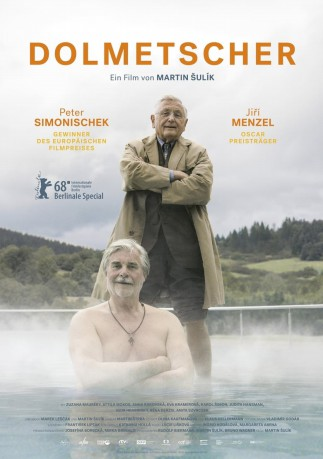

#9439 Der Dolmetscher
Alternativ: The Interpreter
 
 IMDB-Wertung: 6.7 / 10
IMDB-Wertung: 6.7 / 10  Metascore: 0
Metascore: 0 
Der slowakischer Jude Ali Ungár, Nachfahre von Opfern der NS-Gräuel und der Österreicher Georg Graubner, Sohn eines Täters, auf Zeugensuche und gemeinsame Reise in die Vergangenheit. Was sie dabei herausfinden, bringt die Männer, die absolut nichts gemeinsam zu haben scheinen, nicht nur einander, sondern auch sich selbst näher.
Jahr: 2018
Dauer: 109 Minuten
FSK:
Land: Slowakei Studio: BioscopTonspuren:
Untertitel:
Auflösung: 1080p (1916x1072) Größe: 4382 MB
Genre: Drama
Regisseur: Martin Sulík
Drehbuch: Marek Lescák, Martin Sulík
Soundtrack: Vladimír Godár
Darsteller:
- Jirí Menzel als Ali Ungár
 Peter Simonischek als Georg Graubner
Peter Simonischek als Georg Graubner- Zuzana Mauréry als Edita
- Anna Rakovska als Truda
- Attila Mokos als Kysel Junior
- Eva Kramerová als Berta
- Karol Simon als Pecner
- Judita Hansman als
- Igor Hrabinský als Kysel Senior
- Réka Derzsi als Veronika
- Anita Szvrcsek als Jola
Datei: X:\2018(A-F)\Dolmetscher, Der (2018, FSK, 1916x1072).mkv seit 03.09.2018
Festplatte: HD 2017(A-Z)-2018(A-F)
 Es gibt insgesamt 151 Filme in der Gruppe '2018(A-F)'
Es gibt insgesamt 151 Filme in der Gruppe '2018(A-F)'